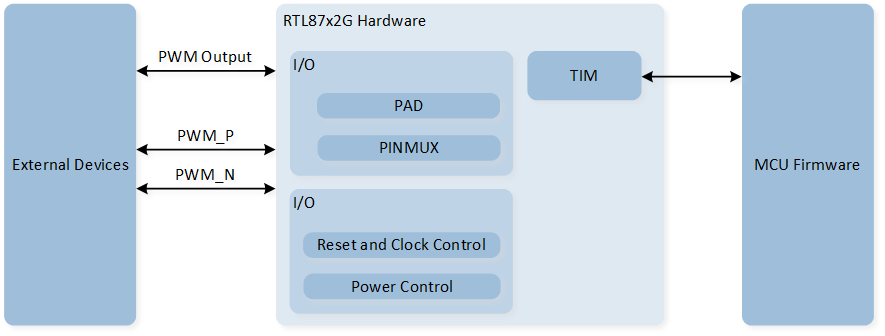
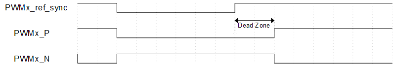

TIMER
Sample List
This chapter introduces the details of the TIM sample. The RTL87x2G provides the following samples for the TIM peripheral.
Functional Overview
The RTL87x2G embeds eight Timer modules which are software controlled, programmable and can be used for various tasks. Each timer channel is completely independent and does not share any resources, so they can operate synchronized together.
Feature List
Number of channels: 8.
Independent input clock divider 1/2, 1/4, 1/8, 1/16, 1/32, 1/40, 1/64.
Timer clock source: 32KHz, 40MHz, PLL.
2 modes (Free-run/User define).
Support PWM output function.
32-bit decrement counter.
Timeout interrupt.
Complementary PWM output & Dead zone (Only TIM2/TIM3).
Block Diagram
Here is the block diagram of TIM. By invoking the MCU Firmware, the timing function or PWM output function of TIM can be implemented. The hardware will enable the timing function or output PWM waveform based on the firmware configuration.

System Block Diagram of TIM
Timer Mode
TIM can operate in two modes: Free-run mode and User-defined mode. By configuring the TIM_TimeBaseInitTypeDef::TIM_Mode within the initialization structure, you can select either TIM_Mode_FreeRun or TIM_Mode_UserDefine.
In both modes, TIM counts down.
Free-run mode: TIM starts counting down from 0xFFFFFFFF.
User-defined mode: TIM starts counting down from a user-defined counter value, which is set through the initialization structure in
TIM_TimeBaseInitTypeDef::TIM_Period.
When the count reaches 0, a TIM timeout interrupt is triggered, and the counter reloads the initial value and continues counting down. When TIM is disabled, counting stops. Upon re-enabling TIM, the counter reloads the initial value and begins counting again.
PWM Mode
Each TIM supports PWM output functionality, with TIM2 and TIM3 supporting complementary PWM output and dead time features.
In the initialization structure, configure the TIM_TimeBaseInitTypeDef::TIM_PWM_En to enable the PWM output function.
When TIM is disabled and in PWM mode, the PWM will output a low level.
When TIM is enabled, the timer will load the set counter values to output high and low levels for the specified duration.
The counter value for the high level is configured through the parameter TIM_TimeBaseInitTypeDef::TIM_PWM_High_Count,
and the counter value for the low level is configured through the parameter TIM_TimeBaseInitTypeDef::TIM_PWM_Low_Count.
PWM Waveform
Note
The duty cycle of PWM cannot be set to 0% or 100%.
Complementary Output and Dead Zone
Only TIM2 and TIM3 support PWM complementary output and dead-time features.
In the initialization, configure the structure member TIM_TimeBaseInitTypeDef::PWMDeadZone_En to ENABLE to activate this feature.
Once this feature is enabled, the PWM output will be divided into two channels, namely PWM_P and PWM_N.
The calculation formula for the dead time is: dead zone time = dead zone size * dead zone clock period.
The clock source for the dead time is 32kHz. So the dead zone clock period is (1/32kHz) = 33us.
The dead zone size is set via TIM_TimeBaseInitTypeDef::PWM_Deazone_Size.
The setting of dead time is divided into the following four situations:
When the dead time is greater than 0 and less than the duration of the PWM high level/low level, the rising edge output of PWM_P and PWM_N will be delayed by a dead time.

PWM Dead Time Diagram (Dead time is greater than 0 and less than PWM high/low level duration)
When the dead time is greater than the duration of the PWM high level, PWM_P will continuously output a low level.

PWM Dead Time Diagram (Dead Time Greater Than PWM High Level Duration)
When the dead time is greater than the PWM low-level duration, PWM_N will continuously output a low level.

PWM dead time diagram (dead time longer than PWM low-level duration)
When the PWM Bypass function is enabled, the rising edge output of PWM_P will be delayed by a dead time, and the outputs of PWM_P and PWM_N will be completely complementary. Call the function
TIM_PWMDZBypassCmd()to enable the PWM Bypass function.

PWM Dead Time Bypass Diagram